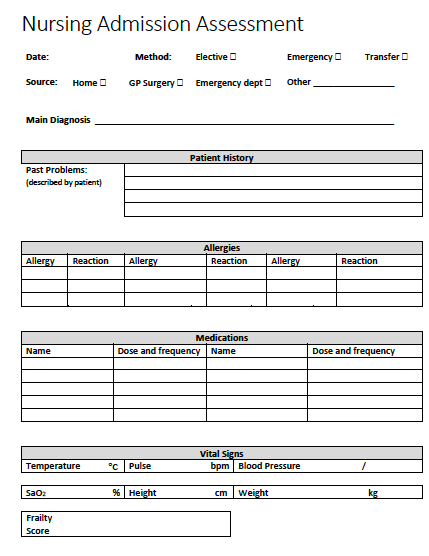
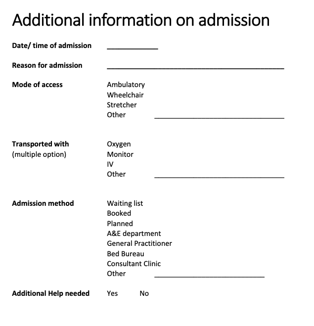

Clinical record modelling workshop Session 1
Agenda
| Topic | Dtn. | Start | End |
|---|---|---|---|
| Introduction | 15 | 09:00 | 09:15 |
| What is openEHR? | 45 | 09:15 | 10:00 |
| Break | 10 | 10:00 | 10:10 |
| Introduction to Archetype and Templates | 45 | 10:10 | 10:55 |
| Break | 15 | 10:55 | 11:20 |
| Build an openEHR app demo | 60 | 11:20 | 12:20 |
| Lunch break | 40 | 12:20 | 13:00 |
| Practical modelling | 45 | 13:00 | 13:45 |
| Break | 10 | 13:45 | 13:55 |
| openEHR and 'interoperability' | 15 | 13:55 | 14:10 |
| Wash-up | 20 | 14:10 | 14:30 |
Practical session - Getting started
-
Open a web browser – Chrome or Firefox are best
-
Go to https://tools.openehr.org/designer (Best if you open this link in a new tab).
-
Login:
freshehr_trainingPassword:ad4freshtraining -
Choose the repository allocated to you – (A) Aberdeen, (D) Dundee, (E) Edinburgh, (I) Inverness
-
Find ‘Nursing Admission Assessment STARTER.v0' in the list of templates. This will open the template.
-
Open the original 'Nursing Admission Assessment paper form'
(Best opened in a new tab).

Practical modelling tasks
A. Tidy the basic template
Problem/Diagnosis
-
Rename the Problem/Diagnosis archetype to 'Main Diagnosis'
-
Constrain out everything apart from 'Problem/Diagnosis name'
Adverse Reaction Risk
-
Pull in the 'Adverse Reaction Risk' archetype
-
Set it's occurrences to 0..* to allow multiple allergies to be recorded.
-
Constrain out everything apart from 'Substance' and 'Manifestation'
-
Rename ‘Manifestation’ to ‘Reaction Details’ and make it mandatory
Medication Order
-
Clone 'Specific direction description'
-
Rename one to 'Dose' and the other to 'Frequency'
Vital Signs section
-
Pull in Pulse Oximetry into Vital Signs section
-
Constrain out everything apart from 'SpO2' ratio
-
Make 'systolic' and 'diastolic' Blood pressure mandatory
Add a Clinical Frailty scale
Go to the International CKM
https://ckm.openehr.org/ckm/archetypes/1013.1.4691/export
(Best if you open this link in a new tab).
-
Press the ‘Export ADL’ button and save the archetype somewhere on your system
-
Go back into Archetype Designer and go to top-menu->‘Import’ then either Browse to your file or drag and drop then Upload.
-
Go back to your template, click on ‘content’, then pull in the Clinical Frailty scale from the list of archetypes on the right.
B. Create a new local archetype - Additional information on admission
The nurses have used the templates you created but have asked for some changes.
You can view the original document here
'Additional Information on Admission' (Best if you open this link in a new tab).

C. Additional information Tasks
Create a new ADMIN_ENTRY archetype called ‘Inpatient admission details’ then add these ‘element’ datapoints ...
Date/time of admission
__________________
Reason for admission
____________________________________________
Mode of access
Ambulatory
Wheelchair
Stretcher
Other _________________________________
Transported with (Multiple options)
Oxygen
Monitor
IV
Other _________________________________
Admission method
Waiting list
Booked
Planned
A&E department
General Practitioner
Bed Bureau
Consultant Clinic
Other ____________________________
Additional Help needed
Yes __ No __
Once you have created your new archetype, go back to your template. Highlight ‘content’, add your new archetype then 'Save' the template.
Good work - you have now completed your first session of openEHR archetype and template modelling!!